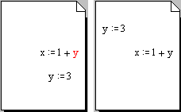
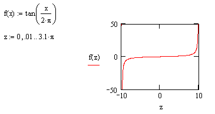
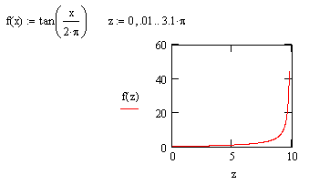

Calculation Order |
Math regions in your worksheet often depend on other math regions to calculate correctly.
| Discussion and Example |
With the exception of global definitions, math expressions in a worksheet are evaluated from left to right and top to bottom. Before using a variable or function, you must define it above and to the left of the expression in which you wish to use it. As you evaluate new expressions, you will see results flow down the page.
The left-hand worksheet below shows an attempt to use y before it is defined. Note how y is red, indicating an error. If you were to click on the expression defining x, you would see an error message saying that the variable is undefined. To correct the error, you must move the region containing y above the definition for x, as shown in the right-hand worksheet below.

This concept is important not only for previously undefined variables, but also for knowing which value a variable currently holds, since variables can be redefined. Consider the following evaluations of f(x) for different values of x:
x := 1 |
|
f(z) := 3·z |
|
f(x) = 3 |
|
Redefine the variable x: |
x := 10 |
Reevaluate the function: |
f(x) = 30 |
Since the first evaluation of the function f occurs before the definition x := 10, the value of x is 1. The second evaluation of f occurs below the x := 10 definition, so it considers x to be 10.
| Determining and correcting order of evaluation |
With large regions, such as 2D or 3D graphs, Picture operators, or large expressions, it may be difficult to tell where the edges of the regions are, and they may overlap or precede other regions in unobvious ways. If you are having trouble locating the boundaries of regions, choose View > Regions. You can easily line up regions in the same horizontal row using Format > Align Regions.
Note that if regions are evaluated in an unintended order, they do not create errors if all the required definitions exist previously in the document. They simply generate unexpected results. For example, this graph

does not use the range variable z, because it's defined below the top corner of the graph. Instead, the graph assigns its own QuickPlot range. To use the range variable z, its region should be positioned above the graph as illustrated below:
